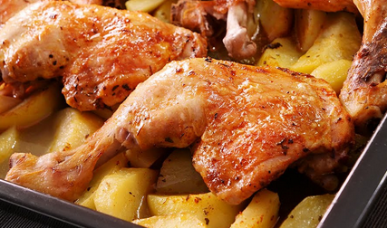

Pollo al horno
receta de pollo al horno

Ingredientes
- 1 cuarto trasero de pollo
- 2 patatas grandes (200g)
- Aceite de oliva
- Sal
- Tomillo o romero
Elaboración (pasos)
- pelar y cortar al gusto las patatas y añadirlas a la cazuela
- añadir el cuarto trasero
- añadir el aceite, el tomillo y la sal
- cocer al horno durante 40' a 250ºC
- servir en la cazuela
Volver